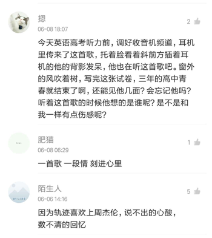
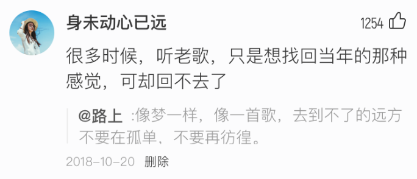

评论数据结构优化
i、为什么要改
目前的评论流程，存在几个主要问题：
1.对于我们的用户来说，创作评论难度较大；
然而，回复别人的评论，其实就无形降低了ugc的难度；
同时，对于热评，下面的大量回复又是一个用户可集中消费的场所；
而目前我们的评论信息组合，依然还是比较古老的一对一模式（跟老的网易一致）；
显然是不能最好解决以上问题；而近期（2月份版本），评论最好的竞品“网易云音乐”也已经调整为我们曾经提过的下面这种模式。
-评论页中，单条评论的展示：

26条回复

全部回复


-单条评论的展示：
1、露出当前赞数最高的2条回复。回复的用户，只展示昵称，不展示头像
2、若回复数量≤2条，则不需要展示最底部的【共N条回复】
若回复数量≥3条，则展示最底部的【共N条回复】
3、点击上图中的A区域，跳转《评论回复页》，且直接唤起输入框和小键盘。
点击上图中的B区域，则跳转《评论回复页》（不唤起小键盘）
4、点击用户头像、昵称，则跳转用户个人主页
5、长按上方这3条评论，底部弹出《举报弹框》，用户在此进行举报操作
评论的回复页
A
B
ii、怎么改
-评论的回复页：
1、最上方是主评论，下方是全部回复。
2、回复信息，默认按照时间排序，越早越靠前。
当有用户对回复进行点赞后，则按照赞数往顶部插。
3、在回复页内，对用户进行回复时，不需要再引用之前的发言，直接展示为——回复XXX：这是回复的话语
4、点击主评论，及各条回复，均是直接唤起小键盘；
点击头像及昵称，跳转用户主页；
长按某条评论，则唤起底部《举报弹框》。



ii、涉及的页面
歌单评论
歌曲评论（写真模式、封面模式、电台模式）
视频评论
MV评论
音乐片段评论
主播电台评论
专辑评论
每日推荐
排行榜
专栏评论